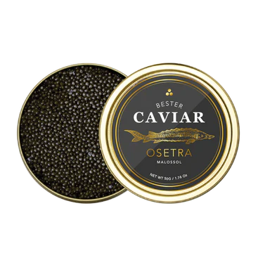
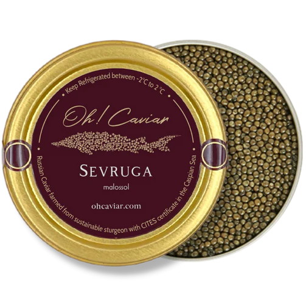
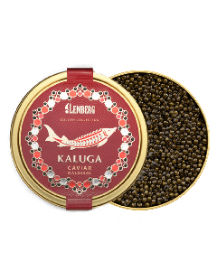
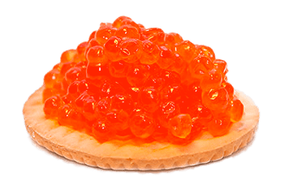
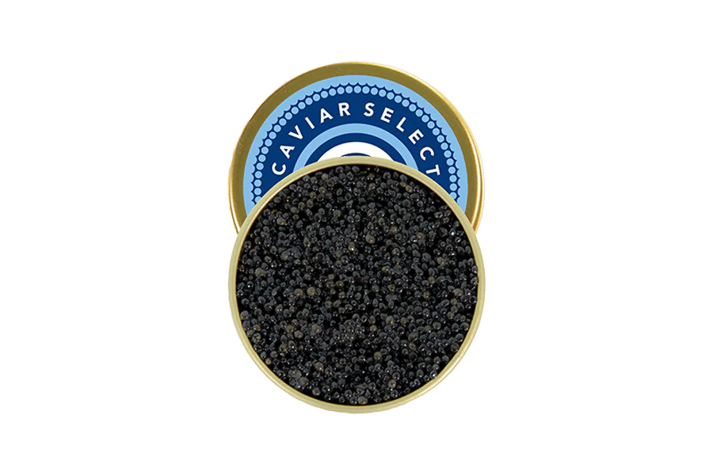
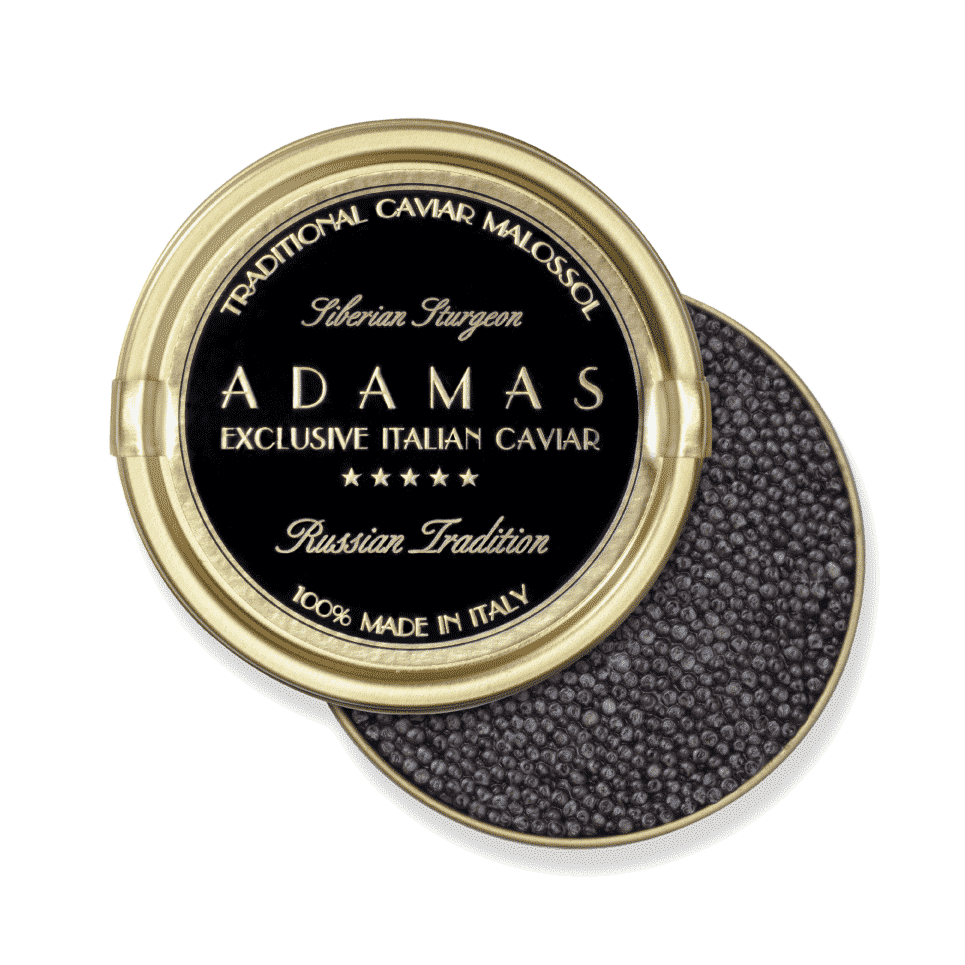
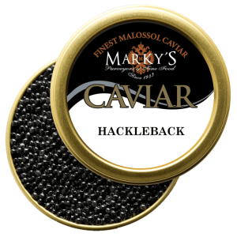

Types of Caviar
There are various types of caviar, each with distinct characteristics based on the sturgeon species, region of origin, and processing. Some of the well-known types of caviar include:
- Beluga Caviar: This is considered the most prestigious and expensive caviar. It is obtained from the Beluga sturgeon, which is the largest sturgeon and can produce the largest and smoothest roe. Beluga caviar is known for its color ranging from light gray to black and its smooth and creamy flavor, making it a highly valued luxury delicacy.

- Oscietra Caviar (Osetra or Asestrá): This caviar is obtained from the Oscietra sturgeon and is appreciated for its medium to large roe, ranging in color from golden to dark brown. Oscietra caviar has a rich and nutty flavor, offering a sophisticated gastronomic experience.

- Sevruga Caviar: Produced from the Sevruga sturgeon, this caviar is known for its small and dark roe. It has a more pronounced flavor compared to Beluga and Oscietra caviar, making it a preferred choice for those seeking a more intense flavor experience.

- Kaluga Caviar: Kaluga caviar is obtained from the Kaluga sturgeon, which is similar in size to Beluga. Its roe is large and varies in color from gray to brown. Kaluga caviar has a mild flavor and is often considered an alternative to Beluga caviar due to its similarity in size and texture.

- Salmon Roe: Although technically not caviar, salmon roe is a popular delicacy. They vary in color from orange to red and have a mild and sweet flavor. Salmon roe is more affordable than sturgeon caviar and is enjoyed for its unique taste.

- American Sturgeon Caviar: Different sturgeon species in North America produce distinct caviars, such as white sturgeon caviar and Atlantic sturgeon caviar. Each of these caviars has its own flavor and texture characteristics, varying according to the species and region of origin.

- Siberian Sturgeon Caviar: This caviar is obtained from the Siberian sturgeon (Acipenser baerii) and is known for its small to medium-sized roe. It has a mild flavor and is more affordable compared to Caspian sturgeon varieties, making it a popular choice for caviar enthusiasts.

- Hackleback Sturgeon Caviar: Originating from North America, the Hackleback sturgeon produces caviar with small roe and an earthy flavor. It is a more affordable option for those looking to enjoy caviar without breaking the budget.

It's important to note that the quality of caviar can vary significantly based on the origin, production process, and sturgeon breeding conditions. Each type of caviar offers a unique gastronomic experience, from the luxurious smoothness of Beluga to the more intense and earthy flavors of other varieties, catering to different preferences and budgets.